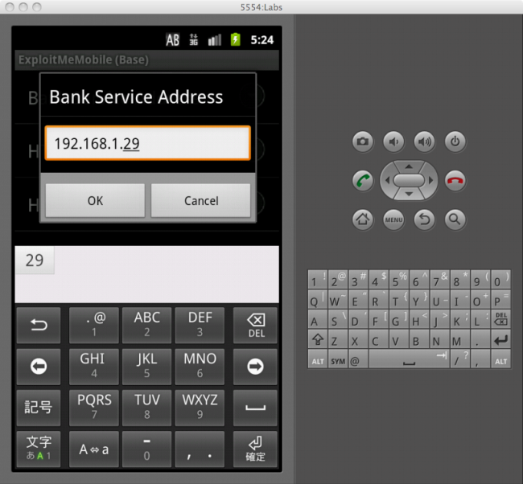
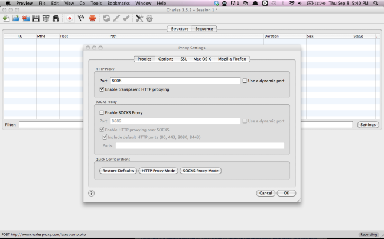
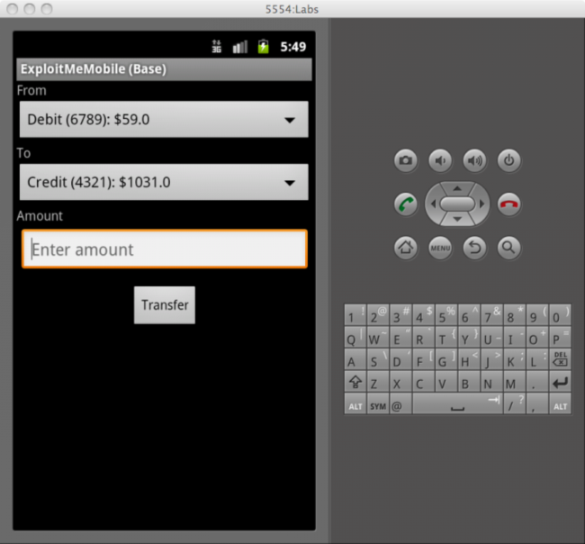
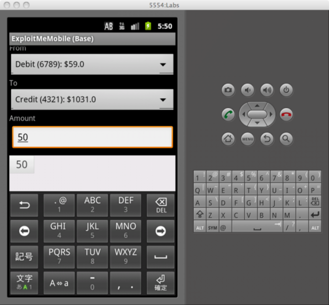
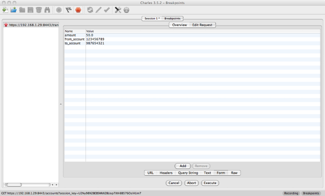
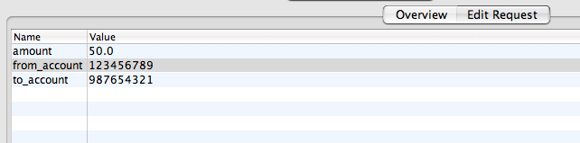

Lab 2 - Parameter Manipulation
The parameter manipulation lab is contained within the bank transfer section.
The purpose of this lab is to demonstrate that many common Android applications still rely on traditional web architectures or REST interfaces in the back end to perform their tasks. Often, if you’re able to trap the request, you can make the application or server act in ways it may not have felt possible.
We will pipe communication between the client and server through a proxy and use this to manipulate the data sent. Start your emulator in proxy mode emulator @YOUR_AVD_NAME --http-proxy localhost:8008
We will be using Charles proxy for this lab, charles is available here.
Due to some quirks of how the Android emulator behaves, you will have to modify some settings in the application. First find out the IP address of your computer on the local area network. You can find this out by running ifconfig on Linux/Mac or by running ipconfig on Windows. Open up the Preferences pane in the menu, set the server address to your computer’s IP, and make sure HTTPS is enabled.
In my case, my IP address is 192.168.1.29: 
Run the server in HTTPS mode with
python app.py --ssl --port 8443
Setup charles to listen on port 8008: 
enter the bank money transfer screen within the ExploitMe Mobile app. 
There are a number of accounts preconfigured in EMM’s default Lab server configuration. We’ve logged in before using the jdoe account. The two usernames we have preconfigured and their bank account numbers are:
-
jdoe / password
- Debit: 123456789
- Credit: 987654321
-
bsmith / password
- Debit: 111111111
- Credit: 22222222
In this lab, we’ll try to transfer money between accounts on the server by intercepting the EMM app request. Again, this traditionally isn’t any different from web exploits, but most apps work in the same manner so it’ll be good to see how it works on the mobile app space.
Fill in the transfer screen and ensure your proxy is trapping the request.

We’ll transfer $50 between our accounts. Hit the transfer button and trap the request.

You can see that the app is sending the request to the web server through a standard HTTP POST. Often with these mobile applications they will either be POSTs with a session key or a Web service XML request.
We can now modify the “from_account” field to see if we can transfer from another account into our own!

Notice that the from account is now from another user. If you go back to the account screen, you will see that you successfully transfered money without losing any. If you reset the application and login as the other user, you will see they lost money.
Solution
The solution here is the same as it would be in a regular web app, we have to perform some validation on the server. You can see how it is done in the ParameterManipulationSolution branch of the server source, available here.
Liquid error: fork() function is unimplemented on this machine